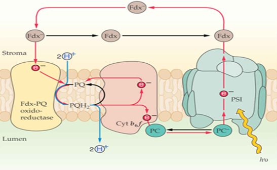
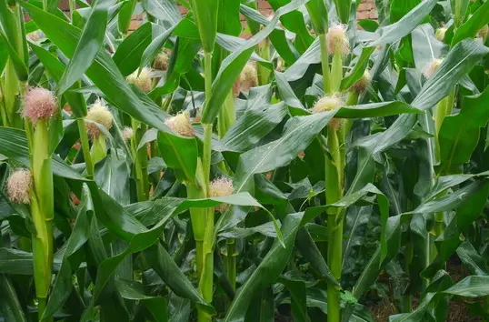
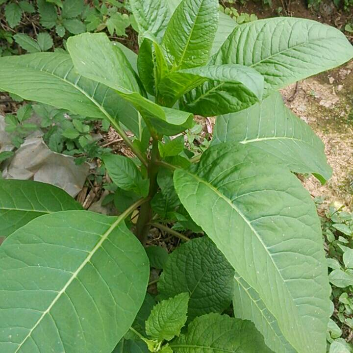
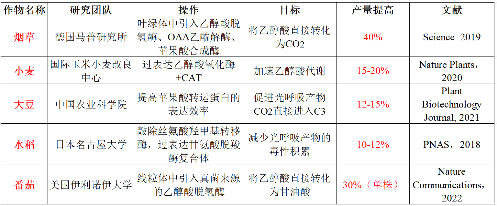
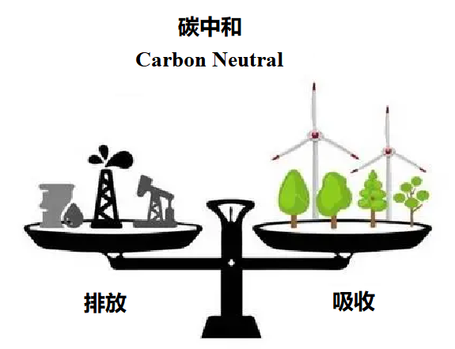

光合作用 · 暗反应与C3-C4-CAM
一、卡尔文循环（Calvin Cycle / C3途径）
卡尔文循环（Calvin-Benson-Bassham Cycle）是光合碳固定的基本途径，发生在叶绿体基质中。利用光反应产生的ATP和NADPH，将CO₂转化为糖类（G3P）。1954-1958年由Calvin、Benson和Bassham用¹⁴CO₂和双向纸层析阐明，Calvin获1961年诺贝尔化学奖。
卡尔文循环分为三个阶段：
- 阶段一：羧化（Carboxylation）——CO₂固定
- 阶段二：还原（Reduction）——3-PGA还原为G3P
- 阶段三：再生（Regeneration）——RuBP再生
总反应式：3CO₂+9ATP+6NADPH+6H⁺+5H₂O→G3P+9ADP+8Pi+6NADP⁺。每固定3分子CO₂净产1分子G3P（3碳糖磷酸酯），其余5分子G3P用于再生3分子RuBP。
阶段一：羧化
酶：RuBisCO（核酮糖-1,5-二磷酸羧化酶/加氧酶）——地球上最丰富的蛋白质（约占叶片可溶性蛋白的50%），也是催化效率最低的酶之一（k_cat≈3s⁻¹，远低于大多数酶）。
反应：RuBP（5碳）+CO₂+H₂O→2×3-PGA（3-磷酸甘油酸，3碳）。RuBisCO由8个大亚基（L，由叶绿体基因rbcL编码）+8个小亚基（S，由核基因rbcS编码）组成（L₈S₈）。大亚基含催化位点，小亚基功能不完全清楚。
RuBisCO的激活：RuBisCO需要CO₂（非底物CO₂）+Mg²⁺的氨基甲酰化修饰（Lys201的ε-氨基与CO₂反应形成氨基甲酸酯-Mg²⁺复合物）才能激活。此过程由RuBisCO活化酶（Rubisco Activase）催化，需要ATP。光照→类囊体电子传递→H⁺泵入类囊体腔→基质pH升高（~8）和Mg²⁺浓度升高→RuBisCO活化。
阶段二：还原
3-PGA→（磷酸甘油酸激酶，ATP）→1,3-BPG→（GAPDH，NADPH）→G3P。G3P（甘油醛-3-磷酸）是光合碳固定的第一个糖类产物。每分子3-PGA消耗1ATP+1NADPH。
阶段三：RuBP再生
5分子G3P（共15个碳）通过一系列反应（转酮醇酶/转醛醇酶/磷酸戊糖途径的酶）重新排列为3分子RuBP（共15个碳）。消耗3ATP。关键中间体：景天庚酮糖-1,7-二磷酸（SBP）和景天庚酮糖-7-磷酸（S7P）。
转酮醇酶（Transketolase）需要TPP作为辅酶，转移2碳单位；转醛醇酶（Transaldolase）转移3碳单位。这些酶在磷酸戊糖途径（PPP）中也有，体现了代谢途径的进化关联。
G3P的去向：①在叶绿体中合成淀粉（临时储存）；②输出到细胞质→合成蔗糖（运输形式）；③作为前体合成氨基酸、脂肪酸等。
二、光呼吸（C2循环）
光呼吸（Photorespiration），又称C2循环，是RuBisCO加氧酶活性的结果。当CO₂浓度低而O₂浓度高时，RuBisCO催化RuBP+O₂→3-PGA（3C）+磷酸乙醇酸（2C）。磷酸乙醇酸经一系列反应回收碳，但消耗ATP和NADPH，释放CO₂，降低了光合效率（可降低20-50%）。
光呼吸涉及三个细胞器的协作：
- 叶绿体：RuBP+O₂→3-PGA+磷酸乙醇酸→（磷酸酶）→乙醇酸→输出到过氧化物酶体
- 过氧化物酶体：乙醇酸→（乙醇酸氧化酶）→乙醛酸+H₂O₂（被过氧化氢酶分解）；乙醛酸+谷氨酸→（转氨酶）→甘氨酸→输出到线粒体
- 线粒体：2甘氨酸→（甘氨酸脱羧酶复合体，GDC）+丝氨酸+CO₂+NH₃+NADH；丝氨酸→输出到过氧化物酶体→羟基丙酮酸→甘油酸→回到叶绿体→3-PGA
光呼吸的生理意义：①消耗过剩的ATP和NADPH（光保护），防止光抑制；②回收RuBisCO加氧反应的碳（~75%的碳被回收）；③为氨基酸代谢提供甘氨酸和丝氨酸。
三、C4途径
C4途径（C4 Pathway / Hatch-Slack Pathway）是CO₂浓缩机制，通过将CO₂以四碳有机酸的形式从叶肉细胞运输到维管束鞘细胞，在RuBisCO周围提高CO₂浓度（可达正常CO₂浓度的10倍），从而抑制光呼吸。由Hatch和Slack于1966年阐明。
C4途径的两个阶段：
- 叶肉细胞：CO₂+H₂O→（碳酸酐酶，CA）→HCO₃⁻；HCO₃⁻+PEP→（PEP羧化酶，PEPC）→草酰乙酸（OAA，4C）。PEPC对HCO₃⁻的K_m极低（~0.2mM），且对O₂完全不敏感（与RuBisCO的本质区别）。OAA→（NADP-MDH）→苹果酸（或经转氨酶→天冬氨酸）。
- 维管束鞘细胞：苹果酸→（NADP-ME/NAD-ME/PEP-CK）→丙酮酸+CO₂。释放的CO₂进入Calvin循环被RuBisCO固定。丙酮酸→回到叶肉细胞→（丙酮酸磷酸双激酶，PPDK，消耗ATP→AMP+PPi）→PEP。
Kranz花环结构：C4植物叶片的特征性解剖结构——维管束鞘细胞（富含叶绿体，无基粒或基粒退化）围绕维管束，外被叶肉细胞环绕，形成"花环"状。叶肉细胞和维管束鞘细胞之间通过大量胞间连丝连接。
C4途径的三种生化亚型（根据维管束鞘细胞中脱羧酶的不同）：
- NADP-ME型（NADP-苹果酸酶型）：叶肉细胞中OAA→苹果酸→运至维管束鞘细胞→NADP-ME→丙酮酸+CO₂+NADPH。代表植物：玉米、甘蔗、高粱。维管束鞘细胞叶绿体基粒退化。
- NAD-ME型（NAD-苹果酸酶型）：叶肉细胞中OAA→天冬氨酸→运至维管束鞘细胞→天冬氨酸→OAA→NAD-MDH→苹果酸→NAD-ME（线粒体中）→丙酮酸+CO₂+NADH。代表植物：黍、马齿苋。
- PEP-CK型（PEP羧激酶型）：OAA在维管束鞘细胞中直接脱羧，OAA+ATP→PEP+CO₂+ADP。代表植物：大黍、虎尾草。
三种亚型的核心区别在于：①运输的四碳酸形式（苹果酸vs天冬氨酸）；②脱羧酶的种类和定位（叶绿体基质vs线粒体vs细胞质）；③维管束鞘细胞叶绿体的基粒发育程度。
四、CAM途径
CAM途径（Crassulacean Acid Metabolism，景天酸代谢）是另一种CO₂浓缩机制，存在于景天科、仙人掌科、凤梨科、兰科等肉质植物中。CAM植物的特点：昼夜节律性——夜间开放气孔固定CO₂，白天关闭气孔进行Calvin循环。
- 夜间（气孔开放）：CO₂进入→碳酸酐酶→HCO₃⁻；PEP+ HCO₃⁻→（PEPC）→OAA→（MDH）→苹果酸→储存在液泡中（苹果酸积累导致液泡pH下降，产生"酸味"——景天酸代谢名称的由来）。此阶段消耗的PEP来自淀粉降解。
- 白天（气孔关闭）：苹果酸从液泡释放→（NADP-ME或PEP-CK）→丙酮酸+CO₂。CO₂→Calvin循环被RuBisCO固定。丙酮酸→淀粉（重新合成）。
CAM植物的PEPC受昼夜节律调控：夜间PEPC磷酸化（激活），白天去磷酸化（失活），防止苹果酸脱羧产生的CO₂又被PEPC固定形成无效循环。
五、C3/C4/CAM九维度综合对比
| 特征 | C3植物 | C4植物 | CAM植物 |
|---|---|---|---|
| CO₂固定酶 | RuBisCO | PEPC（叶肉）+RuBisCO（鞘） | PEPC（夜间）+RuBisCO（白天） |
| CO₂最初产物 | 3-PGA（3C） | OAA（4C） | OAA（4C，夜间） |
| CO₂补偿点 | ~50 ppm | <10 ppm | <5 ppm（白天） |
| 光呼吸 | 显著（20-50%） | 极低 | 极低（白天） |
| Kranz结构 | 无 | 有 | 无 |
| 水分利用效率 | 低（~1-3g干重/kg H₂O） | 高（~3-5g/kg） | 极高（~10-40g/kg） |
| 最适温度 | 15-25°C | 30-45°C | >30°C |
| 代表植物 | 水稻、小麦、大豆 | 玉米、甘蔗、高粱 | 仙人掌、菠萝、兰花 |
| δ¹³C同位素值 | -28‰~-24‰ | -14‰~-10‰ | -20‰~-10‰ |
C3/C4中间型和C4进化的分子机制：
- 自然界中存在C3-C4中间型植物（如黄顶菊属Flaveria的多种植物），提供了C4途径进化的"活化石"。
- C4途径的进化需要：①Kranz解剖结构的形成；②PEPC在叶肉细胞中高表达；③RuBisCO限制在维管束鞘细胞中表达；④脱羧酶在维管束鞘细胞中高表达；⑤适当调节细胞器（叶绿体和线粒体）的定位和数量。
- 单细胞C4：某些植物（如毕氏海蓬子Bienertia）在单个细胞内实现C4途径，通过叶绿体的极性分布（两端vs中间）实现CO₂浓缩。
六、本节核心总结
七、C4进化的全球意义与前沿研究
C4光合作用的进化意义：
- C4途径至少独立进化了62次（在19个科中），是趋同进化的经典范例。C4植物约占地表植物的3%，但贡献了全球~25%的净初级生产力（NPP）。
- C4植物在高温、高光强、干旱环境中的优势：①CO₂浓缩机制→抑制光呼吸→提高水分利用效率（WUE）和氮利用效率（NUE）；②PEPC对CO₂的高亲和力→低CO₂浓度下仍有高效光合作用。
- C4水稻工程（C4 Rice Project）：通过基因工程将C4光合途径引入水稻（C3植物），目标是提高水稻产量50%+。需要：①Kranz样解剖结构；②PEPC在叶肉细胞高表达；③RuBisCO限制在维管束鞘细胞表达；④C4代谢酶的正确亚细胞定位。
C3-C4中间型植物提供了C4进化的"快照"。Flaveria属包含C3、C3-C4中间型、C4-like和C4植物，是研究C4进化的模式系统。C4进化路径：C3→C3-C4中间型（GDC限制在维管束鞘细胞→光呼吸CO₂释放于维管束鞘→CO₂部分浓缩）→C4-like（部分C4循环酶上调）→完全C4（Kranz结构+C4酶全表达）。
全球变化与C3/C4分布：大气CO₂浓度升高→C3植物光合效率提高（因光呼吸受抑）→C3相对于C4的竞争优势增强。但温度升高→C4植物优势增强。全球变化对C3/C4植物分布的影响是生态学研究热点。
八、光合作用研究前沿与实验技术
光合作用研究的前沿技术：
- 叶绿素荧光分析（Chlorophyll Fluorescence）：非侵入性测量光合作用效率。F_v/F_m（最大量子效率，PSII光化学效率）——健康植物约0.83，胁迫下降低。NPQ（非光化学淬灭）测量光保护能力。PAM（脉冲振幅调制）荧光计是常用仪器。
- 气体交换测量：LI-COR光合仪测量CO₂同化率（A）和气孔导度（g_s）。A-Ci曲线（光合速率-胞间CO₂浓度曲线）→估算RuBisCO的最大羧化速率（V_cmax）和RuBP再生速率（J_max）。
- 碳同位素判别（Δ¹³C）：C3植物δ¹³C≈-28‰，C4植物δ¹³C≈-13‰。Δ¹³C与胞间CO₂/大气CO₂比值（c_i/c_a）相关→反映气孔导度和水分利用效率的长期整合指标。
光合作用的遗传改良：
- Rubisco工程：提高Rubisco对CO₂的亲和力和催化效率（降低K_m，提高k_cat），减少加氧酶活性。挑战：Rubisco的催化机制复杂，羧化酶和加氧酶活性共享同一活性位点，难以完全分离。
- 光呼吸支路工程：在叶绿体中引入光呼吸旁路（如大肠杆菌的乙醇酸代谢途径→在叶绿体中完全氧化乙醇酸→释放CO₂→提高局部CO₂浓度→抑制光呼吸）。试验表明可提高作物产量~20-40%。
- C4水稻工程：将C4光合途径引入水稻（C3植物）。需要改变叶片解剖结构（Kranz结构）和细胞特异性基因表达。由国际水稻研究所（IRRI）领导的C4水稻联盟正在进行。
- NPQ加速恢复：通过过表达NPQ松弛相关蛋白（如PsbS、ZEP），加速光保护态向光吸收态的转变→提高冠层光合效率（"加速NPQ恢复"策略在烟草中已实现~15%生物量增产）。
九、光合作用产物分配与源库关系
光合产物分配（Photoassimilate Partitioning）：光合作用产生的G3P的去向决定了植物的生长和产量。
- 源-库关系（Source-Sink Relationship）：源（source）→产生光合产物（成熟叶片）；库（sink）→消耗或储存光合产物（生长点、果实、根、种子）。源-库平衡决定光合速率和产物分配。
- 韧皮部运输（Phloem Transport）：蔗糖（光合产物主要运输形式）通过韧皮部筛管从源运到库。Munch压力流假说（Pressure Flow Hypothesis）解释运输机制：源端蔗糖主动装载→筛管渗透压升高→水流入→静水压升高→推动筛管液流向库端→库端蔗糖卸载→渗透压降低→水流出。
- 蔗糖合成与淀粉合成的调控：FBPase和SPS（蔗糖磷酸合酶）是蔗糖合成的关键酶；AGPase（ADP-葡萄糖焦磷酸化酶）是淀粉合成的关键酶。光照→3-PGA/Pi比值升高→AGPase激活→淀粉合成。黑暗→3-PGA/Pi比值降低→淀粉降解。
- 库强（Sink Strength）：库器官吸引光合产物的能力。取决于库大小（细胞数量）和库活性（代谢速率）。果实发育中库强变化显著→影响坐果率和产量。
光合作用与作物产量：
- 收获指数（Harvest Index, HI）= 经济产量/生物产量。现代小麦HI~0.5（绿色革命前~0.3）。
- 提高光合效率是突破作物产量瓶颈的关键。潜在策略：①加速NPQ恢复（已实现~15%增产）；②C4水稻工程；③光呼吸旁路工程；④Rubisco工程。
七、光合作用碳代谢前沿
C4光合作用的进化与分布：
- C4光合作用在被子植物中独立进化了至少65次（多系起源），主要分布在禾本科（玉米、甘蔗、高粱）、藜科、苋科等。C4植物约占陆地植物物种的3%，但贡献了全球~25%的净初级生产力。
- C4进化的前提条件：①Kranz花环解剖结构（需要叶肉细胞和维管束鞘细胞空间分离）；②PEP羧化酶在叶肉细胞中高表达；③C4酸脱羧酶在维管束鞘细胞中高表达；④细胞器（叶绿体、线粒体）在两种细胞中的差异化分布。
- C3-C4中间型植物：Moricandia、Flaveria、Parthenium等属中存在C3-C4中间型→C3循环和C4循环在同一细胞或相邻细胞中进行，CO₂补偿点介于C3和C4之间（~10-30ppm）。这些中间型是研究C4进化的重要模型。
- C4水稻工程（C4 Rice Project）：国际水稻研究所（IRRI）主导，目标是将C4光合作用途径转入水稻（C3植物），预期提高产量50%。关键挑战：建立Kranz结构、细胞特异性基因表达调控。
光合同化产物分配——源库关系：
- 源（Source）：净输出同化产物的器官（成熟叶）。库（Sink）：净输入同化产物的器官（根、果实、种子、幼叶、分生组织）。
- 韧皮部装载：叶肉细胞→共质体途径（胞间连丝）或质外体途径（蔗糖转运蛋白SUC/SUT）。质外体途径：蔗糖→H⁺-蔗糖同向转运体（SUC，质子梯度驱动次级主动运输）→筛管-伴胞复合体（SE-CC）。
- 韧皮部运输机制：Munch压力流假说（1930）→源端蔗糖装载→筛管渗透势下降→水进入→静水压升高；库端蔗糖卸载→筛管渗透势升高→水流出→静水压降低。源库间静水压差驱动筛管液流（可达1cm/min）。
- 韧皮部卸载：共质体途径（通过胞间连丝，如根尖）或质外体途径（通过转运蛋白，如发育中的种子因缺乏胞间连丝）。
必背考点汇总
- Calvin循环三阶段：羧化(RuBisCO)→还原(3-PGA→G3P，ATP+NADPH)→再生(5G3P→3RuBP，ATP)
- RuBisCO：L₈S₈，双重活性（羧化酶/加氧酶），CO₂+Mg²⁺氨基甲酰化激活，RuBisCO活化酶
- 光呼吸C2循环：三细胞器协作（叶绿体→过氧化物酶体→线粒体），GDC释放CO₂
- C4途径：PEPC（叶肉细胞）+RuBisCO（维管束鞘细胞），Kranz花环结构，三种亚型（NADP-ME/NAD-ME/PEP-CK）
- CAM途径：昼夜节律，夜间PEPC固定CO₂→苹果酸储液泡，白天RuBisCO固定CO₂
- C3/C4/CAM对比：CO₂补偿点、光呼吸、Kranz结构、水分利用效率、δ¹³C值
- 关键酶：PEPC（不受O₂抑制，Km低），PPDK（消耗2~P），RuBisCO活化酶
高中教材衔接 · 课标对应
人教版必修1第5章"光合作用"——暗反应（碳反应）固定 CO₂ 生成有机物、C3 和 C5 的循环、CO₂ 浓度对光合速率的影响；人教版选择性必修1——光合作用的环境因子（光强、温度、水分、CO₂）。具体到小节：必修1第5章第1节"光合作用的过程"——暗反应阶段、卡尔文循环；必修1第5章第3节"光合作用原理的应用"——提高光合速率的措施（合理密植、间作、温室增施 CO₂）。
2025 / 2026 联赛 · 初赛真题链接
本章重难点深度解析
重难点 1：Calvin 循环的精细化学计量与调控
- 三阶段详细路径：① 羧化（carboxylation）：3 RuBP (5C) + 3 CO₂ → 6 3-PGA (3C)，由 RuBisCO 催化（"5+1→2×3"）；② 还原（reduction）：6 3-PGA + 6 ATP → 6 1,3-BPG（PGK 磷酸甘油酸激酶）+ 6 ADP → 6 G3P + 6 NADPH + 6 NADP⁺ + 6 Pi（GAPDH 甘油醛-3-磷酸脱氢酶）；③ RuBP 再生（regeneration）：5 G3P (3C) → 3 RuBP (5C)，涉及 aldolase、transketolase、phosphatase 等多种酶。
- 净产出计量：6 轮循环消耗 6 CO₂ + 18 ATP + 12 NADPH → 净产 1 葡萄糖 (6C) + 18 ADP + 12 NADP⁺ + 17 Pi；每固定 1 CO₂ 消耗 3 ATP + 2 NADPH。
- 关键酶的调控：① RuBisCO 由 RuBisCO activase 介导的 Lys-201 氨甲酰化（需 CO₂）激活；② GAPDH 和 sedoheptulose-1,7-bisphosphatase 受光照激活（-SH/-S-S 转换，光照下还原态活跃）；③ FBPase（果糖-1,6-二磷酸酶）和 SBPase（景天庚酮糖-1,7-二磷酸酶）受光调节（光激活），是 Calvin 循环的"门控"位点；④ Calvin 循环的"光调控"：光照→光合电子传递→基质 pH 从 7.0 → 8.0（激活多数基质酶）+ Mg²⁺ 从类囊体腔→基质（激活 RuBisCO 等）+ Fd/Trx 系统还原二硫键。
重难点 2：光呼吸（Photorespiration）——RuBisCO 的加氧活性
- RuBisCO 的双功能：RuBP + CO₂ → 2 3-PGA（羧化） vs RuBP + O₂ → 1 3-PGA + 1 2-磷酸乙醇酸（加氧）。相对活性比取决于 CO₂/O₂ 比例和温度：25°C 空气中约 80% 羧化/20% 加氧；高温下 O₂ 溶解度降低但 RuBisCO 对 O₂ 的特异性增加，光呼吸加剧。
- 光呼吸路径（三细胞器协作）：叶绿体（RuBisCO 加氧产生 2-磷酸乙醇酸 → 乙醇酸）→ 过氧化物酶体（乙醇酸氧化为乙醛酸 → 甘氨酸，转氨酶将甘氨酸→丝氨酸）→ 线粒体（2 甘氨酸 → 丝氨酸 + CO₂ + NH₃，消耗 1 NADH）→ 过氧化物酶体（丝氨酸 → 羟基丙酮酸 → 甘油酸）→ 叶绿体（甘油酸 → 3-PGA 进入 Calvin 循环）。
- 光呼吸的能量代价：每 2 分子 2-磷酸乙醇酸（来自 1 RuBP 加氧）→ 回收 1 3-PGA + 释放 1 CO₂ + NH₃。净效应：固定 2 CO₂ 损失 1 CO₂ ≈ 损失 25% 碳。消耗额外 ATP（回收）和 NADH（线粒体甘氨酸脱羧）。
- 光呼吸的功能假说：① 损失代价 → 减少光抑制（消耗过剩光能，避免 PSI/PSII 损伤）；② 回收硫脂和氮；③ 是植物在低 CO₂ 环境下的"妥协"——C4/CAM 途径就是绕开光呼吸的适应。
重难点 3：C4 途径——CO₂ 浓缩机制
- C4 途径的两个细胞分工：叶肉细胞（M cell）→ 鞘细胞（BS cell）。PEP 羧化酶（PEPC）在 M 细胞中催化 PEP + CO₂ → 草酰乙酸（OAA, 4C）→ 苹果酸或天冬氨酸 → 转入 BS 细胞 → 脱羧酶（PEP-CK/NADP-ME/NAD-ME）将 4C 酸脱羧释放 CO₂ → CO₂ 浓度在 BS 细胞叶绿体中可达大气浓度的 10-100 倍 → RuBisCO 在高 CO₂ 下高效固定。
- C4 三种亚型：① NADP-ME 型（玉米、甘蔗）：苹果酸经 NADP-苹果酸酶在 BS 叶绿体脱羧；② NAD-ME 型（马齿苋、黍）：天冬氨酸/草酰乙酸经 NAD-苹果酸酶在线粒体脱羧；③ PEP-CK 型（羊草、热带禾本科）：草酰乙酸经 PEP 羧激酶在胞质脱羧。
- Kranz 结构的解剖学基础：C4 植物叶片的维管束鞘细胞含大量叶绿体（"鞘细胞环"），叶肉细胞和鞘细胞间有大量胞间连丝，4C 酸通过胞间连丝高速运输。叶脉间距小（每个 M 细胞距 BS 细胞 < 1 个细胞距离），保证 CO₂ 预固定的高效率。
- C4 的生态优势：① 高光强（光饱和点 1500-2000 μmol/m²/s vs C3 的 600-1000）+ 高温（25-40°C 适宜）；② 低光呼吸（CO₂ 浓缩抑制 RuBisCO 加氧）；③ 高水分利用效率（CO₂ 浓缩 → 气孔可部分关闭 → 减少蒸腾）；④ 在热带、亚热带、干旱地区占优势（如玉米、甘蔗、高粱、黍、稷、狗牙根、马齿苋）。
重难点 4：CAM 途径——时间分隔的 CO₂ 固定
- CAM 的时间分隔：夜间（凉爽、蒸腾低）→ 气孔打开 → PEP 羧化酶催化 PEP + CO₂ → OAA → 苹果酸 → 储存于液泡（液泡 pH 从 ~5 降到 ~3，苹果酸浓度可达 200 mM）；白天（高温、强光）→ 气孔关闭（减少蒸腾）→ 液泡中苹果酸运出 → 脱羧（细胞质 NADP-ME 或线粒体 NAD-ME）→ 释放 CO₂ + 丙酮酸 → CO₂ 进入 Calvin 循环（白天光反应供 ATP+NADPH）→ 丙酮酸 → PEP（丙酮酸磷酸二激酶 PPDK）→ 准备下一夜间循环。
- CAM 的代表植物：仙人掌科（Cactaceae）、景天科（Crassulaceae）、兰花科（Orchidaceae，部分）、菠萝（Ananas comosus）、龙舌兰（Agave）、仙人掌属（Opuntia）、大蒜、芦荟。
- CAM 的极端水分利用效率：CAM 植物每固定 1 g CO₂ 仅需 50-125 g H₂O（C4 为 250-350，C3 为 400-500），是 C3 的 8-10 倍；适合极端干旱环境（沙漠、岩漠、附生）。
- CAM 的"兼性"和"专性"：兼性 CAM（如冰叶日中花 Mesembryanthemum crystallinum）在水分胁迫下可从 C3 转为 CAM 模式；专性 CAM（如仙人掌）始终运行 CAM 途径。CAM 也存在"昼夜颠倒"现象——热带附生 CAM 植物在夜间开放气孔吸收 CO₂ 储存为苹果酸，白天气孔关闭以减少蒸腾。
重难点 5：光合作用与作物产量的关系
- 作物分类与起源：① C3 作物（水稻、小麦、大豆、棉花、马铃薯、大麦、油菜、甜菜、烟草）—— 占全球耕地 75% 以上，但单位面积产量受限于光呼吸；② C4 作物（玉米、甘蔗、高粱、黍、稷、苋属、狗牙根）—— 约占全球耕地 15%，但单产高（玉米高产纪录 38 t/ha vs 水稻 ~15 t/ha）；③ CAM 作物（菠萝、剑麻、龙舌兰用于纤维、芦荟用于药材）—— 干旱地区重要。
- "C4 水稻计划"（C3 → C4 Rice Project）：2008 年由 IRRI（国际水稻研究所）启动，2010 年代与英国 Oxford 合作加入，旨在通过基因工程将 C3 水稻改造为 C4 水稻，预期产量提高 30-50%、水分利用效率提高 1 倍。但目前仍未成功，瓶颈包括：① Kranz 解剖学改造困难（涉及叶脉距离缩短、鞘细胞分化增强、转录因子 SCARECROW/SHR 调控）；② 多个 C4 关键酶（PEPC、PPDK、NAD-ME、PEP-CK）需协同表达并去细胞特异性定位；③ 维管束鞘细胞和叶肉细胞间的代谢物运输需要重建胞间连丝密度。
- 光合午休（midday depression of photosynthesis）：中午高温强光下，蒸腾加剧 → 叶片失水 → 气孔关闭 → CO₂ 供应不足 → 光合速率出现"低谷"。C3 植物显著，C4 植物较轻（C4 CO₂ 泵缓解），CAM 植物无（白天气孔本关闭）。这是热带、亚热带 C3 作物夏季产量的限制因素。
- 提高 C3 作物光合的策略：① Rubisco 工程（用细菌/古菌的"高效 Rubisco"或"羧化小体"）；② 引入 C4 关键酶（如将玉米 PEPC + PPDK 表达在水稻叶肉细胞）；③ 增强光呼吸回收（将细菌 GLYC 旁路引入植物）；④ 优化叶绿体排列和光呼吸副产物的回输；⑤ 群体光合（适宜叶面积指数 LAI、株型、密植）。
Calvin 循环、Rubisco、光呼吸与 C3-C4-CAM 综合比较拓展
碳同化的三条途径：在植物体内，已发现的 C 同化途径有 3 条：
- C3 途径（Calvin 循环）：唯一可直接生成碳水化合物的途径，基本途径
- C4 途径（Hatch-Slack 途径）：辅助途径，固定、运转、浓缩 CO₂
- CAM 途径（景天科酸代谢）：辅助途径，固定、运转、浓缩 CO₂
C4 和 CAM 仅是 C3 的补充：它们都不能直接生成碳水化合物，最终都把浓缩的 CO₂ 交给 C3 途径合成糖。理解这一点是把握三者关系的关键。
Calvin 循环的研究史：1946 年，美国M. Calvin（卡尔文）和 A. Benson（本森）以小球藻为实验材料，用 14C 同位素标记结合双向纸层析技术。关键的发现和论文主要在 1940 年代末到 1950 年代初期发表。1953 年 DNA 双螺旋模型提出同年，卡尔文小组发表了 10 年研究的成果——Calvin 循环。1961 年诺贝尔化学奖授予卡尔文。
Calvin 循环的三个阶段：
- ① 羧化阶段：RuBP + CO₂ → 2× 3-PGA（3-磷酸甘油酸），由 Rubisco 催化
- ② 还原阶段：3-PGA + ATP → 1,3-BPG → GAP（甘油醛-3-磷酸），消耗 ATP 和 NADPH。GAP 是 Calvin 循环的真正产物
- ③ 再生阶段：GAP 经 C3、C4、C6、C7 化合物转变，最终消耗 ATP 再生 RuBP。此阶段是 Calvin 循环中步骤最多的部分
Calvin 循环总反应式：
3 CO₂ + 5 H₂O + 9 ATP + 6 NADPH → GAP + 9 ADP + 8 Pi + 6 NADP⁺ + 3 H⁺
能量转化效率 > 80%——这是植物将光能转化为稳定化学能的高效机制。
Rubisco：地球上最丰富也最"低效"的酶：
- 绝对丰度：地球上丰度最高的酶，总质量约 7 亿吨，每年固定 >1000 亿吨 CO₂，是无机碳进入生物圈的主要途径
- 细胞内含量：Rubisco 占叶中可溶性蛋白质的 20-25%，以 1000 kg/秒速度合成（全球）
- 亚基组成：8 大亚基（472 Aa，叶绿体基因编码）+ 8 小亚基（123 Aa，核基因编码）
- 催化效率：每秒钟仅催化 3-10 个 CO₂ 分子转化，比一般酶低 107-1013 倍——是"得过且过"演化的典型
- 双重活性：既有羧化酶活性（CO₂ + RuBP → 2 PGA）也有加氧酶活性（O₂ + RuBP → 1 PGA + 1 磷酸乙醇酸 → 光呼吸）。CO₂/O₂ 比例决定走向
- 植物需求：每个人类需要约 44 kg Rubisco 来供养（维基百科数据）
为什么 Rubisco 这么"低效"却没被淘汰？这是植物长期演化的"路径依赖"：① 25 亿年前大气无 O₂，Rubisco 只需有羧化酶活性即可；② 蓝藻演化出水光解后，O₂ 浓度上升，Rubisco 的"加氧副反应"成不可避免的累赘；③ 由于 Rubisco 在植物中含量巨大（占蛋白 1/4），任何突变都对细胞造成严重扰动，演化难以优化——这是"过河拆桥不可"的进化困境。
Calvin 循环的三大调节机制：
- ① 自身调节（底物水平）：当 RuBP 含量较低时，生成的磷酸丙糖主要用于 RuBP 再生；当 RuBP 含量较高时，部分磷酸丙糖用于合成蔗糖和淀粉
- ② 光的调节（光活化）：光通过铁氧还蛋白-硫氧还蛋白系统活化 4 种关键酶：
- 磷酸甘油醛脱氢酶（还原阶段）
- 1,6-二磷酸果糖磷酸酶（蔗糖合成）
- 1,7-二磷酸景天庚酮糖磷酸酶（产物更新）
- 5-磷酸核酮糖激酶（产物更新）
- ③ 光的调节 Rubisco（多层次）：
a. 光促进 Rubisco 小亚基基因转录
b. 光活化 Rubisco 活化酶 → Rubisco 构象改变 → 促进酶与 CO₂ 和 Mg²⁺ 结合
c. 光反应 → 叶绿体基质 pH 升高（→8）→ 类囊体腔 pH 降低（→5）→ Mg²⁺ 从类囊体腔进入基质 → Rubisco 活性升高 - ④ 产物转运调节：若磷酸丙糖能顺利运出叶绿体或转化为淀粉储存（积累少），则促进光合作用；若积累过多则反馈抑制
光呼吸的"3 个细胞器"过程（详细机理）：光呼吸是植物特有的呼吸方式，在叶绿体、过氧化物酶体、线粒体 3 个细胞器中协同进行：
- 叶绿体中：Rubisco 的加氧反应——RuBP + O₂ → 1 分子 3-PGA（进入 Calvin）+ 1 分子 2-磷酸乙醇酸（2-PG，光呼吸底物）
- 过氧化物酶体中：2-PG → 乙醇酸 → 乙醛酸（同时放出 CO₂）→ 甘氨酸
- 线粒体中：2 甘氨酸 → 丝氨酸（同时放出 CO₂ 和 NH₃）
- 过氧化物酶体中：丝氨酸 → 羟基丙酮酸 → 甘油酸 → 进入叶绿体 → 3-PGA → 回到 Calvin 循环
光呼吸又叫 C2 循环的原因：每 2 分子 2-PG（合计 2 个 C）经过光呼吸释放出 2 个 CO₂，"投入 2 碳、放掉 2 碳"——光呼吸释放的 CO₂ 量恰好等于进入 Calvin 的 C 量在某些条件下。简化：2PG(2C)→ 1 CO₂ + 1 C1 (回到 Calvin) → 净损失。
光呼吸的环境依赖：高温、强光、干旱 → 气孔关闭 → 胞间 CO₂ 浓度降低、O₂ 浓度相对升高 → Rubisco 加氧反应↑ → 光呼吸↑。这就是 C3 植物夏季"光合午休"的根本原因之一。
光呼吸的生理意义（看似浪费，实则保护）：
- ① 消耗过剩光能（光保护）
- ② 消耗过剩 ATP 和 NADPH（防止电子传递链过度还原）
- ③ 回收部分 C（仍有 75% 的 C 回到 Calvin）
- ④ 产生氨基酸（甘氨酸、丝氨酸）
光呼吸的前沿改造：2025 年 9 月《Science》和《Nature Plants》连续发表光呼吸工程改造突破：
- McG 循环（Malate-CoA-Glycerate 循环）：将包含 6 个异源酶的 McG 循环导入拟南芥叶绿体，使其与内源 CBB 循环并行工作。生理测定显示，大气 CO₂ 浓度下净光合碳同化速率翻倍，光系统 II 运行效率（φPSII）更高，相关蛋白质复合物含量明显富集——光合效率全面提升
- 光合作用核心改造方向：① Rubisco 工程（突破"不可改造"假设）；② 光呼吸旁路（McG 循环是唯一多作物田间验证增产技术）；③ Calvin-Benson 环（CBB，即 C3）增强；④ 碳浓缩机制（CCMs，高潜力高挑战）；⑤ 冠层尺度光能优化（短期易落地）；⑥ 光谱扩展（长期前沿）
大气 CO₂ 浓度变化趋势：2024 年平均 CO₂ 浓度达 424.61 ppm，2026 年 6 月 3 日日均 432.32 ppm，年增长 2-3 ppm，12 年后将达 450 ppm——这是气候系统不可逆变化的临界点（冰盖崩塌、洋流停滞等）。中国提出"双碳目标"（2030 碳达峰、2060 碳中和），植树造林和光合作用利用是核心抓手。
C4 途径（Hatch-Slack 途径）的核心机制：C4 途径是双羧酸途径，由 Marshall Davidson Hatch 和 C. Roger Slack 在 1960 年代发现。
C4 途径的 6 步反应（在两种细胞中分工）：
- 叶肉细胞胞质中：PEP + CO₂ → OAA（草酰乙酸），由PEP 羧化酶 (PEPC) 催化（对 CO₂ 亲和力极高，无加氧副反应）
- 叶肉细胞叶绿体中：OAA → 苹果酸 (Mal) → 脱羧（释放 CO₂）→ 丙酮酸（不同 C4 亚型用不同酶脱羧：NADP-ME / NAD-ME / PEP-CK）
- 叶肉细胞叶绿体中：丙酮酸 → PEP（由 PPDK 丙酮酸磷酸二激酶催化，消耗 ATP）
- 叶肉→维管束鞘：苹果酸通过胞间连丝运到维管束鞘细胞（BSC）
- 维管束鞘叶绿体中：苹果酸脱羧释放 CO₂ → 进入 Calvin 循环（此处的 CO₂ 浓度可达大气浓度的 10-20 倍）
- PEP 回到叶肉细胞：开始新循环
C4 途径的两大意义：
- ① CO₂ 浓缩机制（CCM）：通过叶肉细胞"先捕获"CO₂，再"泵"到鞘细胞，使 Rubisco 工作在高 CO₂ 浓度环境下，抑制光呼吸
- ② C4 植物的水分利用效率高：由于能在气孔部分关闭时（低 CO₂ 浓度下）继续固定 CO₂，C4 植物比 C3 节水 2 倍
C4 植物叶片的 Kranz（花环型）解剖结构：维管束周围鞘细胞（BSC）内有大叶绿体（多无基粒，PSII 较少但 PSI 活跃，专门做 Calvin），叶肉细胞（M）有正常叶绿体。两类细胞间有大量胞间连丝。常见 C4 植物：玉米、甘蔗、高粱、黍、稷、苋属、狗牙根。
CAM 途径的 4 个特点：CAM 途径是时间分隔的 CO₂ 固定，整个途径发生在一个细胞中，但分白天和夜晚两个环节：
- ① 时间分隔：夜间气孔打开（凉爽、蒸腾低）→ PEPC 固定 CO₂ → 苹果酸储存于液泡（液泡 pH 5→3）；白天气孔关闭 → 苹果酸运出 → 脱羧 → CO₂ 进入 Calvin
- ② 极端水分利用效率：CAM 植物每固定 1 g CO₂ 需 50-125 g H₂O（C4：250-350；C3：400-500）——是 C3 的 8-10 倍
- ③ 多在极端干旱环境：沙漠、岩漠、附生（兰花、菠萝、仙人掌）
- ④ 形似 C3、C4 的混合：CAM 途径的"夜酸"积累（类似 C4 的"先固定后释放"）和"昼放"（类似 C3 的 Calvin 循环）使其兼具 C3 和 C4 特征
CAM 的类型与可塑性：
- 专性 CAM（obligate）：始终运行 CAM 途径（仙人掌、菠萝、龙舌兰）
- 兼性 CAM（facultative）：正常条件下 C3，水分胁迫下转 CAM（冰叶日中花 Mesembryanthemum crystallinum）
- 诱导性 CAM（inducible）：马齿苋平时 C4，"晒不死"——可由 C4 转为 CAM（这是 C4→CAM 的诱导转变）
- "昼夜颠倒 CAM"：热带附生 CAM 植物（如某些兰花）夜间开放气孔吸收 CO₂，白天气孔关闭
CAM 的进化意义：CAM 是植物对极端干旱环境的"避逆"策略——通过时间分隔把"吸 CO₂"和"光合"分开，最大限度减少蒸腾。这是植物在干旱中"生存"而非"高产"的典型适应。
C3 / C4 / CAM 九维度综合比较：
| 特征 | C3 植物 | C4 植物 | CAM 植物 |
|---|---|---|---|
| 代表植物 | 水稻、小麦、大豆 | 玉米、甘蔗、高粱 | 仙人掌、菠萝、景天 |
| CO₂ 固定途径 | 只有 Calvin 循环 | C4 浓缩 + Calvin | CAM 浓缩 + Calvin |
| 分隔方式 | 无 | 空间（叶肉+鞘细胞） | 时间（白天+夜间） |
| 关键酶 | Rubisco（低效） | PEPC + Rubisco（高效） | PEPC（夜）+ Rubisco（昼） |
| 光呼吸强度 | 高（20-25%） | 低（2-5%） | 极低（<2%） |
| 最适温度 | 25℃ | 35℃ | 35℃+ |
| 水分利用效率 | 低（400-500 g H₂O/g CO₂） | 中（250-350） | 极高（50-125） |
| 叶结构 | 无 Kranz | Kranz 花环型 | 肉质多汁 |
| CO₂ 补偿点（ppm） | 50-100 | 0-10 | 0-5 |
| 饱和光强 | 较低 | 高 | 中 |
C3 vs C4 哪个光合效率高？不是绝对的——取决于环境：
- 高温、高光强、干旱：C4 > C3（C4 占优）
- 低温、低光强、湿润：C3 > C4（C3 占优）
- 这就是为什么热带/亚热带 C4 占优势，温带 C3 占优势
C3-C4 中间型与可塑性：植物界并不只有"纯 C3"和"纯 C4"两类，还存在中间过渡类型：
- C3-C4 中间型：全球发现 >40 种，我国 8 种，代表：黄顶菊属的几个种。形态学上接近 C3，但光呼吸部分被抑制（CO₂ 泵弱）
- C4-CAM 中间型：全球 <10 种，主马齿苋科
植物碳同化途径的可塑性：
- 水稻：C3，但含有 C4 途径的酶（PEPC、PPDK），但无相应 Kranz 结构
- 荸荠：水中时 C3，空气中时 C4
- 高粱：平时 C4，开花后 C4→C3
- 烟草：平时 C3，感染花叶病毒后 C4 酶活性↑
这些"中间型"和"可塑性"是植物适应不同环境的策略，也提示了 C3 → C4 演化的可能路径。
光合产物的合成与转运：光合作用的最终目的不是 GAP，而是形成含有稳定化学能的蔗糖和淀粉。光合产物的主要种类：
- 直接产物：磷酸丙糖（GAP/DHAP）、蔗糖、淀粉（最稳定）
- 次生产物：氨基酸（如 14C-醋酸喂叶绿体可形成脂肪酸）、有机酸、脂质
磷酸丙糖的命运：磷酸丙糖是 Calvin 循环出口的关键中间产物，有多个去向：
- ① 合成淀粉（叶绿体中）：白天光合产物过剩时合成为临时储存淀粉（叶绿体基质中）
- ② 合成蔗糖（细胞质中）：磷酸丙糖运出叶绿体后转化为蔗糖，运到其他器官
- ③ 夜晚淀粉降解：晚上叶绿体中淀粉被降解为麦芽糖和葡萄糖，运出叶绿体进入细胞质，再被转化为蔗糖运走
- ④ 回流到 Calvin 循环：用于 RuBP 再生
"光合重要中间产物"：磷酸丙糖的"枢纽"地位：磷酸丙糖处于光合碳代谢的十字路口——向上可形成糖、向下可形成脂、向左可形成氨基酸、向前可形成能量。





第四章第四节 PPT 补充要点速览
- 碳同化三途径：C3 基本（Calvin 唯一产糖）、C4 辅助（空间浓缩 CO₂）、CAM 辅助（时间浓缩 CO₂）
- Calvin 循环：1946 Calvin+Bensen 14C 标记 + 双向纸层析；1961 Nobel；3 阶段（羧化+还原+再生）
- Rubisco：地球最丰富酶（7 亿吨）、占叶可溶蛋白 20-25%；双重活性（羧化+加氧）；催化效率低 107-1013 倍
- Calvin 调节：自身（RuBP/丙糖）+ 光（活化 4 个关键酶 + Rubisco 活化酶 + pH 调节）+ 产物转运
- 光呼吸：3 细胞器协同（叶绿体→过氧化物酶体→线粒体→过氧化物酶体→叶绿体）；高温强光干旱下加剧
- McG 循环（2025 突破）：将 6 个异源酶导入叶绿体，净光合翻倍，PSII 效率提升
- C4 6 步反应：叶肉（PEP→OAA→Mal→丙酮酸→PEP）+ 鞘（Mal 脱羧→CO₂ 进入 Calvin）
- CAM 4 特点：时间分隔 + 极端 WUE（8-10×C3）+ 极端干旱 + 形似 C3/C4 混合
- 中间型：C3-C4 中间型（>40 种，我国 8 种）、C4-CAM 中间型（<10 种）
- 可塑性：水稻含 C4 酶无 Kranz；荸荠水/空 C3/C4 切换；马齿苋 C4→CAM 诱导
- 磷酸丙糖：碳代谢"枢纽"——糖、脂、氨基酸、能量的共同前体
- CO₂ 临界点：450 ppm 是气候不可逆变化临界点；"双碳 30-60"